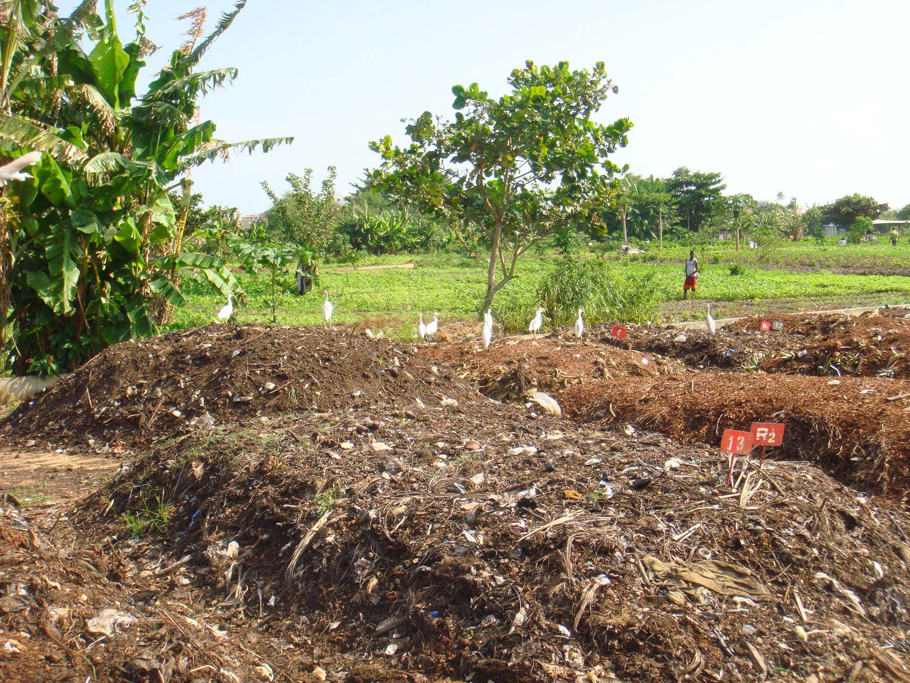

The Science of Compost: How Microbes Turn Waste Into Garden Gold
The hidden microbial world inside your compost pile: bacteria, fungi, and archaea at work.
Every compost pile is a living ecosystem. Beneath the surface, trillions of invisible organisms are working around the clock to transform your kitchen scraps and yard waste into one of nature's most powerful soil amendments. Understanding what happens inside that pile — or bin — gives you the knowledge to speed up decomposition, eliminate odors, and produce compost that will revolutionize your garden.
The Microbial Workforce: Who Lives in Your Compost?
A single gram of finished compost contains more living organisms than there are people on Earth. This microbial community is organized into distinct groups, each with a specific role in the decomposition process. Think of it as a biological factory where every worker has a job description.
Bacteria: The Primary Decomposers
Bacteria do the heavy lifting in composting. They account for roughly 80% to 90% of the decomposition activity and are responsible for breaking down the most accessible organic materials — sugars, starches, proteins, and simple carbohydrates found in food scraps and fresh green waste.
Composting bacteria fall into two temperature-based categories:
- Mesophilic bacteria (moderate-temperature): These work at 50°F to 104°F (10°C to 40°C). They are the first colonizers, breaking down easily digestible materials like sugars and simple proteins. Mesophiles initiate decomposition but cannot survive sustained high heat.
- Thermophilic bacteria (heat-loving): These activate once the pile reaches 104°F to 158°F (40°C to 70°C). The most important genera include Bacillus, Thermobifida, and Lysobacter. Thermophiles break down complex carbohydrates, cellulose, hemicellulose, and even some proteins that mesophiles cannot touch. They are the reason hot composting produces finished compost in weeks rather than months.
The thermophilic phase is where most of the pathogen destruction happens. Temperatures above 131°F (55°C) for at least three days kill weed seeds, plant pathogens, and harmful bacteria like E. coli and Salmonella. This self-pasteurization is one of the key advantages of hot composting over cold or passive methods.
Fungi: The Complex Material Breakers
While bacteria handle simple sugars and starches, fungi are the specialists for tough structural materials. They produce powerful extracellular enzymes — cellulases, ligninases, chitinases — that break down cellulose, hemicellulose, lignin, and even chitin from insect exoskeletons.
Fungi become especially important in the later stages of composting. As temperatures drop below 104°F (40°C), fungal populations surge. Filamentous fungi form hyphal networks that physically bind soil particles together, creating the stable aggregates that give finished compost its crumbly texture.
Mycorrhizal fungi and actinomycetes also contribute to the final curing phase. Actinomycetes look like fine white threads (they are actually bacteria, not fungi) and specialize in breaking down lignin-rich materials like woody stems, cardboard, and paper. Their presence is often signaled by a pleasant earthy smell — that characteristic "forest floor" aroma of healthy compost.
Archaea: The Deep Process Workers
Less famous but equally important are archaea, single-celled organisms distinct from bacteria. In composting, methanogenic archaea produce methane in anaerobic (oxygen-free) pockets within the pile. While methane is a greenhouse gas and represents inefficient decomposition, its presence tells you that your pile needs more aeration.
The Four Phases of Composting: A Biological Timeline
Composting is not a single event but a succession of biological phases. Each phase creates conditions that favor different organisms while eliminating others. Understanding this timeline helps you manage your pile for optimal results.
Phase 1: Mesophilic Incubation (Days 1 to 3)
When you first assemble a compost pile, mesophilic bacteria immediately begin colonizing the organic materials. They feed on readily available sugars and starches, producing heat as a metabolic byproduct. The pile temperature rises gradually from ambient levels toward 104°F (40°C).
This phase is often invisible because it happens below the surface and produces no dramatic visual changes. However, it is critical for establishing the microbial community that will drive the entire decomposition process.
Phase 2: Thermophilic Active Decomposition (Days 3 to 14+)
Once the pile reaches 104°F (40°C), thermophilic bacteria take over. This is the most active phase of composting, and temperatures can climb to 160°F (71°C) or higher in well-managed piles.
During this phase:
- Rapid decomposition of carbohydrates, proteins, and fats
- Moisture loss through evaporation (the pile "sweats")
- Carbon dioxide production peaks as microbes respire
- Weed seeds and pathogens are destroyed by heat
- The pile volume shrinks significantly as organic matter is consumed
This phase requires oxygen. Thermophilic bacteria are aerobic, meaning they cannot function without it. If the pile becomes compacted or waterlogged, oxygen levels drop and anaerobic organisms take over, producing foul-smelling compounds like hydrogen sulfide (rotten egg smell) and ammonia.
Phase 3: Cooling and Fungal Succession (Weeks 2 to 4)
As the easily digestible materials are consumed, the temperature begins to drop. Thermophilic bacteria decline as their food source diminishes, and mesophilic organisms plus fungi re-establish dominance.
This cooling period is essential for producing stable compost. Rushing past this phase by turning the pile too frequently can result in "green" compost that still contains partially decomposed materials and may rob soil of nitrogen when applied to gardens.
Phase 4: Curing (Weeks 4 to 12+)
The curing phase is where compost matures into a stable, humus-rich soil amendment. Slow-acting organisms break down remaining complex materials like lignin and cellulose. The pile temperature returns to near ambient levels.
During curing:
- Humic substances form through the polymerization of organic molecules
- Nutrients become stabilized in forms plants can readily absorb
- The pH typically rises from acidic (5.0 to 6.0) toward neutral (7.0)
- Biodiversity peaks as earthworms, springtails, and mites colonize the material
Cured compost has a dark brown color, crumbly texture, and earthy smell. It should not feel warm to the touch and should not show signs of active decomposition.
The Carbon-Nitrogen Balance: Fuel for Microbial Engines
Every microbe in your compost pile needs two things to survive: carbon for energy and structure, and nitrogen for protein synthesis. The ratio of these elements determines how fast or slow decomposition proceeds.
The ideal Carbon-to-Nitrogen (C:N) ratio for composting is approximately 25:1 to 30:1 by weight. This means for every one part nitrogen, there should be 25 to 30 parts carbon in the pile.
| Material Type | Example Materials | Approximate C:N Ratio |
|---|---|---|
| Fresh greens (nitrogen-rich) | Fruit scraps, grass clippings, coffee grounds | 15:1 to 20:1 |
| Browns (carbon-rich) | Dried leaves, straw, shredded paper | 40:1 to 80:1 |
| Ideal mix | Combination of greens and browns | 25:1 to 30:1 |
If the C:N ratio is too low (too much nitrogen), excess ammonia gas escapes, creating a strong urine-like odor. If it is too high (too much carbon), decomposition slows dramatically because microbes lack sufficient nitrogen to build proteins and reproduce.
Oxygen: The Invisible Ingredient
Aerobic decomposition (with oxygen) produces carbon dioxide, water, heat, and stable organic matter. Anaerobic decomposition (without oxygen) produces methane, hydrogen sulfide, organic acids, and ammonia — compounds that smell bad and represent a loss of valuable nutrients.
Maintaining aerobic conditions requires:
- Adequate porosity: The pile structure must allow air to flow through. Materials like straw, wood chips, and coarse leaves create air channels between particles.
- Regular turning: Turning the pile introduces fresh oxygen and redistributes moisture and microbes throughout the mass.
- Proper volume: A pile smaller than 3 feet cubed loses heat too quickly. Larger piles retain heat better but require more frequent turning to prevent anaerobic zones from forming in the center.
Moisture: The Medium of Life
Microbes cannot function without water. All biochemical reactions occur in aqueous solution, and microbial cells must maintain a hydrated environment to survive. The ideal moisture content for composting is 40% to 60% by weight — roughly the consistency of a wrung-out sponge.
Too dry: Microbial activity slows or stops entirely. Bacteria become dormant, and decomposition halts until moisture is restored.
Too wet: Water fills pore spaces that should contain air, creating anaerobic conditions. The pile produces foul odors and may generate leachate (nutrient-rich liquid runoff) that carries away valuable nitrogen.
From Waste to Soil: What Compost Actually Is
Finished compost is not simply "decomposed waste." It is a complex, stable organic material called humus. Humus is formed through the polymerization of simple organic molecules into large, complex structures that resist further decomposition.
The benefits of adding compost to soil are extensive:
- Structure improvement: Humus binds soil particles into stable aggregates, improving aeration and drainage in clay soils while increasing water retention in sandy soils.
- Nutrient reservoir: Compost contains all essential plant nutrients (nitrogen, phosphorus, potassium, calcium, magnesium, sulfur) plus trace minerals like iron, zinc, copper, and manganese. These nutrients are released slowly as microbes continue to break down organic matter in the soil.
- Pest and disease suppression: Healthy compost introduces beneficial microorganisms that outcompete plant pathogens. Studies have shown that compost-amended soils exhibit reduced incidence of root rot, wilt diseases, and nematode damage.
- pH buffering: Compost has a natural buffering capacity that helps stabilize soil pH, reducing the need for lime or sulfur amendments.
- Carbon sequestration: By converting atmospheric carbon (via plant growth) into stable soil organic matter, composting is one of the few agricultural practices that actively removes CO2 from the atmosphere and stores it in the ground.
Putting It All Together: Managing Your Pile for Maximum Microbial Activity
The science above translates directly into practical management decisions. Here is how to apply each principle:
- Layer greens and browns: Aim for a 1:3 ratio by volume (one part green material to three parts brown) to achieve the ideal C:N balance.
- Maintain pile size: Build your pile at least 3 feet wide by 3 feet tall to retain heat and support thermophilic decomposition.
- Turn regularly: Turn the pile every 3 to 7 days during the active phase to maintain aerobic conditions and redistribute moisture.
- Monitor moisture: The pile should feel like a wrung-out sponge. Add water if dry, add browns if wet.
- Be patient through curing: Allow 4 to 12 weeks of curing after the active phase before using your compost in the garden.
The next time you add kitchen scraps to a bin or toss leaves into a pile, remember that you are feeding an entire ecosystem. Every handful of compost contains more life than you can possibly imagine — and understanding that life is what separates successful composting from frustrated failure.
Next Steps: Ready to put this science into practice? Explore our step-by-step checklists for every composting method, or browse our recommended gear to get started today. Start with the Beginner's Checklist →